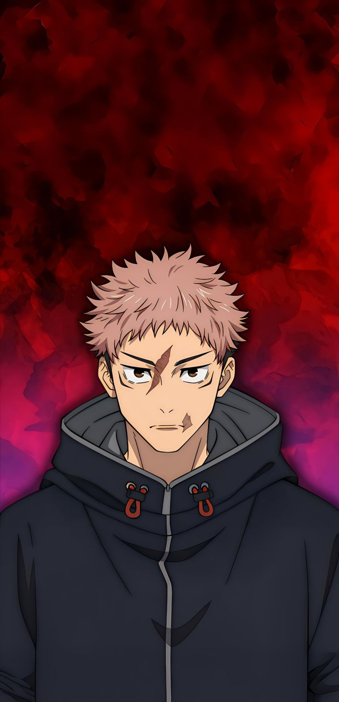

Tokyo Jujutsu High

Yuji Itadori
Grade: Inherent Talent
A naturally gifted athlete who became the vessel for Ryomen Sukuna after swallowing one of his cursed fingers.

Satoru Gojo
Grade: Special Grade
The strongest jujutsu sorcerer alive. A first-year teacher at Tokyo High who inherits both the Limitless and Six Eyes.

Megumi Fushiguro
Grade: Grade 2
A calm first-year student utilizing the Zen'in clan's prized Ten Shadows Technique to summon powerful Shikigami.

Nobara Kugisaki
Grade: Grade 3
A fierce and confident girl from the countryside who manipulates cursed energy through her hammer, nails, and straw doll.
Cursed Spirits

Ryomen Sukuna
Grade: Special Grade (King of Curses)
An absolute tyrant who ruled over a thousand years ago. Currently co-existing inside Yuji Itadori's body.